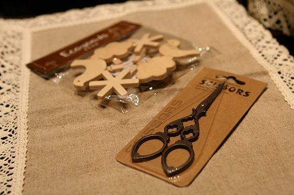
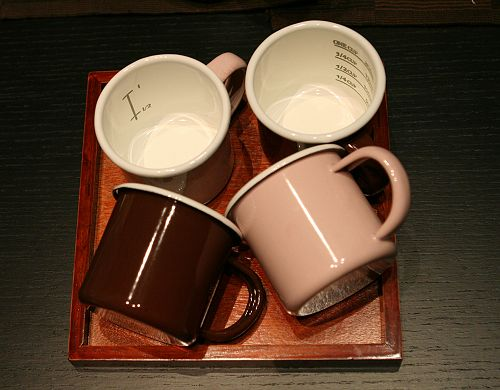
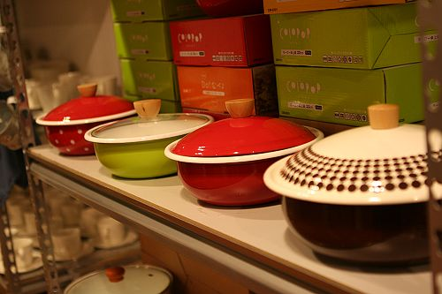
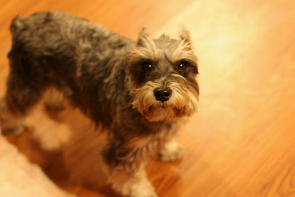

躺被窝里看了三部电影已经到了下午2点，急忙起床赶去选植物，作为送给扑土店开业的礼物。我自信满满的以为我的车可以装得下一棵树，结果那株象小树一般高的滴水观音，尝试多种装运方式无果后，干脆租了辆小面包车将“树”拖到店里。
这间In CafeTB实体店比我想象中要大许多，还需要更多的商品来填充，也比我想象得要生动，白墙绿窗的简单装修，使其看上去倒有几分欧洲简约风格，虽然那里面多为日式商品。之前我总觉得日式餐具器皿不够大气，今天买回来之后摆在桌上把玩，发现它们令生活忽然生动起来，小巧可爱，温馨又甜蜜。看着它们，恨不能赶紧烧壶水，泡杯茶，幻想着学会冲泡奶茶之后，动作利落老练地在厨房里操作这些小东西，有了它们大概在餐厅里消磨一个下午也不会感觉枯燥，太让人期盼了！
今天这些小东西都属于我了。并且我把拆下的气泡袋集中起来，等下次去店里买东西还能包装用。

好爱这只搪瓷壶，木质把手和壶盖，一下子就区别于其它的水壶了。还有红色款，但我坚定地选了白色。为这只心爱的壶配了只垫子，摆放在茶几上也不怕。

复古剪刀与冰箱磁铁，现在很流行复古的玩意儿，虽然我很少做针线活，但可以收藏一把，时常拿出来抚摩观赏，等以后退休有时间了做布艺手工用。

这是我最满意的盘架，首先环保，其次很适合架盘子。我打算把在宜家买的中看不中用的盘架淘汰掉，换上这样的盘架，不同形状的盘子都可以被整齐的架起来，这样从餐边柜透明玻璃门看进去会多么地赏心悦目啊，所以还需要几个这样的盘架。

选了咖啡色和粉红色搪瓷缸，这两种颜色搭配在一块儿很时尚的感觉,喝喝饮料很不错。盛杯子的木托盘既方便又实用，有不同尺寸的。

=======================IN CAFE实体店======================
画面只展示了一半的店面，如果一半用来供咖啡奶茶和甜点，和朋友在这里消磨几个小时也不错。

这是我计划购回的锅，等有透明盖子的新货来，目前最钟情右边那只咖啡色的。

透明玻璃的小奶瓶，好有细节啊。早晨在餐桌上为每位亲爱的家人准备一只这样的瓶子，装上酸奶或鲜牛奶，除了食欲还会涌上无法克制的占有欲。以及那些棉麻的餐垫买回家摆放在客厅茶几上，上面放茶杯用品还挺出彩的。

老式相机，以及手动打字机，这些被时代和科技淘汰的用品，却为IN CAFE增添了一些怀旧气息。我刚进公司那会儿，公司还在使用手动打字机，真应该在公司淘汰的时候搬回家做装饰用。


此时，我们已经很少会看见卖扣子，尤其这么多扣子一起出现在商品中，当然也许出售的只是那些玻璃瓶。事实上我很需要一只这样的玻璃瓶，因为那些新衣服上的配扣都被我塞在不同的容器里，天晓得在需要的时候该怎么找到它们？

1000多元的铜壶，嫌贵吗？想买也买不到，非售卖品，是扑土心爱的壶。

它们很适合存放袋装茶与袋装咖啡，适合那些小巧又温馨的单身公寓。

IN CAFE的电话，非售卖品。

墙上那面钟不晓得卖不卖？

土豆也来拜访IN CAFE了，还吃了大惊喜小姐送的宜芝多蛋糕。

为朋友准备的温暖角落，注意那座沙发，是儿童床改造滴。


22 Responses to “生动．生活@In Cafe”
2010-01-10
我想说的没法用文字表达,拥抱一下.
2010-01-10
看起来很环保（如果是二手的话）。
2010-01-10
平添好多的占有欲~~;)
2010-01-10
where’s the shop?
2010-01-10
今天南京的天气很阴冷，BOLGBUS还是无法登陆，幸好在茶小姐这里还有一份精神依靠，真是寒天里的一处温暖地。
2010-01-10
最后再附加个店家地址就好了….方便其他爱它的人去淘货！
看见滴水观音的2片叶子了，真大…..
2010-01-10
我喜欢这种有情调的小店
2010-01-10
很精致。
不过这间店面所出售的商品，似乎只针对有上层品位的客户。小众，小众，哈哈。
祝生意兴隆哈。
2010-01-11
点紫色的文字就可以打开小店的连接。
2010-01-11
茶美女已经在身体力行低碳和环保理念了。表扬。
2010-01-11
不好意思，茶，转载了您的照片，没有争得您的同意。现在已经标注。美好的事物，我只想收藏起来，别无它意，不好意思。
2010-01-11
我也一直在关注in cafe
2010-01-11
搪瓷的确实很日式
2010-01-12
这些“破烂”女孩子们都好爱啊，细节打动人~
2010-01-12
像日本杂货店。我家附近也有的。
2010-01-12
这些商品就是出口到日本的，呵呵~
你现在在大阪还是在东京？
2010-01-13
西西，右边那咖啡色的点点锅，我和SHUWUA人手一只。不过我的给我妈了。
2010-01-13
木质把手搪瓷壶，我坚定地选择红色~~这款复古剪刀也喜欢，老式相机有故事（前几天刚想买一个老式相机珍藏）~~
2010-01-13
我在大阪啊。
天天忙忙累累死死。
2010-01-13
天天忙忙碌碌，不要“死死“。
2010-01-15
哦，原来是这里的啊，店在那里？这些东西配FFDM应该不错，骑大马真累人。
这几天父母搬过来，发现一大堆旧式玩艺，30年代的蝴蝶缝纫机、21年的司不灵锁、纽扣、从前老老头厂的纱包包装袋、Kodao小胶片卡片机、5, 60年代的年历、王云五字典、煤油灯。。。。配新的RayLen Vineyards正好。
生活就是折腾，动力来于心底超越现状的欲念。
2010-01-15
还有“煤油灯”？真是好古老的收藏啊~
Leave A Reply
存档只读，评论已关闭。